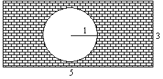
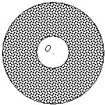

Shaded Regions
To find the area of the shaded region of a
figure, subtract the area of the unshaded region from the area of the entire
figure.
Example:
What is the area of
the shaded region formed by the circle and the rectangle in the figure below?

Solution: To
find the area of the shaded region subtract the area of the circle from the
area of the rectangle:
area of rectangle – area of circle
3 × 5 – π × 12
15 – π
The answer is (B).
Example:
In the figure below, the radius of the larger circle is three times that of the smaller
circle. If the circles are concentric, what is the ratio of the shaded region’s
area to the area of the smaller circle?

Solution:Since
we are not given the radii of the circles, we can choose any two positive
numbers such that one is three times the other. Let the outer radius be 3 and
the inner radius be 1. Then the area of the outer circle is
π × 32 = 9π, and the area of the inner
circle is
π × 12 = π. So
the area of the shaded region is
9π – π
= 8π. Hence, the ratio of the area of the shaded
region to the area of the smaller circle is
=
.Therefore,
the answer is (C).